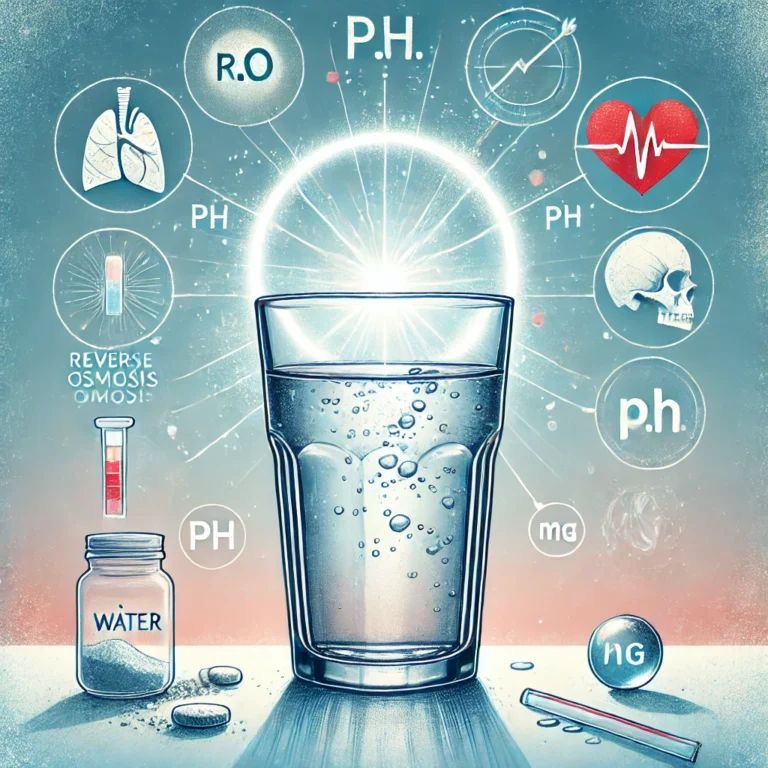
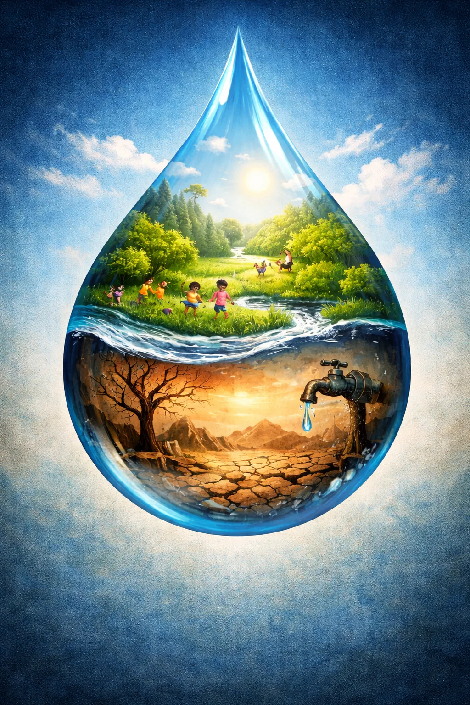
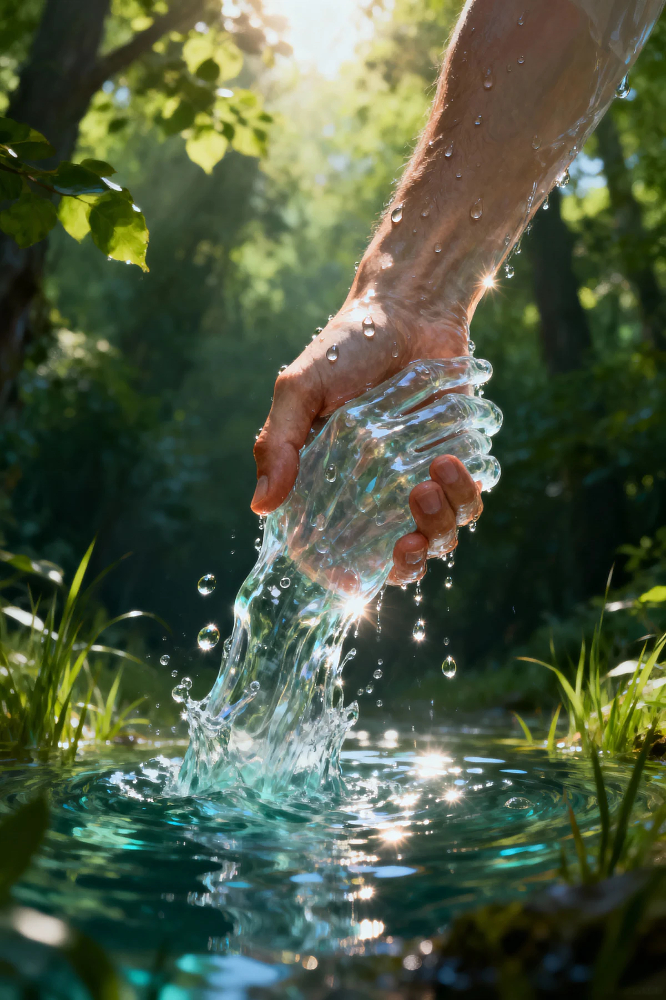

Shortening your shower by just two minutes and turning off the tap while brushing your teeth saves hundreds of liters of fresh water monthly
Every drop counts! Water is the lifeline of our planet, yet billions of liters are wasted daily through simple, unnoticed habits. By making minor changes in our routines, we can build a massive positive impact.
Here is how you can make a change today:
• Turn off the tap while brushing your teeth to save up to 12 liters every minute.
• Fix leaky faucets around the house—a single dripping tap can waste over 30 liters a day!
• Use a bucket instead of a hose when washing cars or watering garden plants.
Let's preserve our freshwater resources for a greener, healthier tomorrow!
Water conservation

